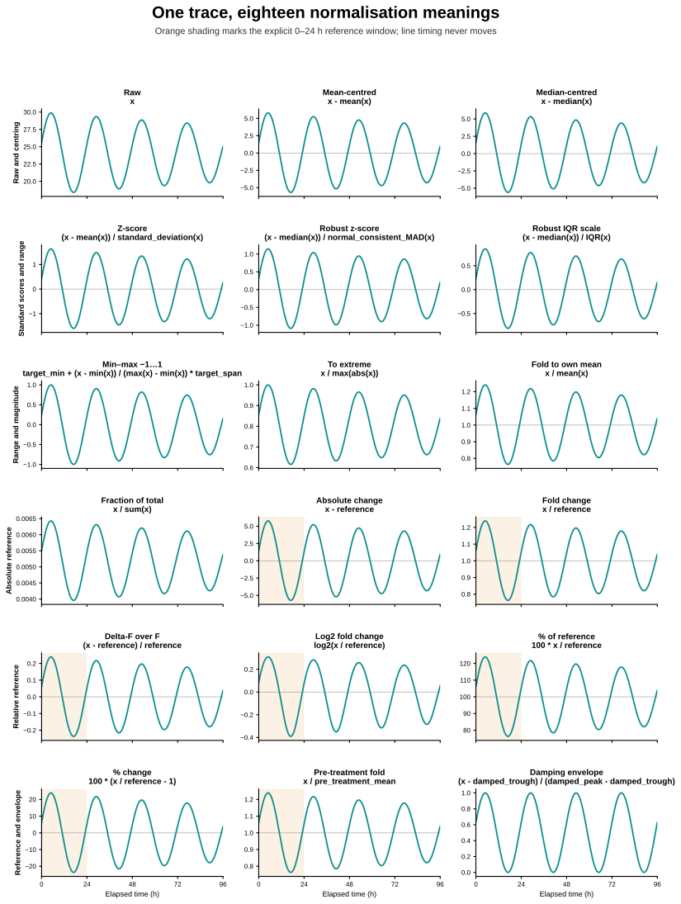

Choose a normalisation method¶
Normalisation changes the vertical ruler, not the time series. Think of reporting the same temperature in Celsius, Fahrenheit, or distance from a chosen baseline: the peaks happen at the same times, but the numbers answer different questions.
Use min–max scaling to compare shape, a standard score to compare deviations, and a reference-based ratio when the baseline itself has scientific meaning. Circadian Workbench never guesses the reference interval.
What the methods do¶

Every panel was calculated by the public normalize action. Orange marks the
inclusive 0–24 hour reference window used by reference-based methods. The exact
plotted values, source hashes, and producer are retained in the figure bundle.
| Method | Calculation | Use it when | Main caution |
|---|---|---|---|
none (raw, unscaled) |
x |
Original units matter | Traces with different baselines or amplitudes remain difficult to compare. |
mean_center (center, centre) |
x - mean(x) |
Compare deviations around each trace's mean | Amplitude and original zero remain unchanged. |
median_center |
x - median(x) |
Centre a trace while reducing sensitivity to isolated extremes | It centres but does not scale amplitude. |
zscore (z, standard_score) |
(x - mean(x)) / standard_deviation(x) |
Compare distance from each trace's centre in standard-deviation units | Sensitive to outliers; choose the population or sample divisor explicitly. |
robust_zscore (robust_z, median_mad) |
(x - median(x)) / normal_consistent_MAD(x) |
Outliers would distort the mean and standard deviation | Requires a non-zero median absolute deviation (MAD). |
robust_scale (robust_scaler, iqr_scale) |
(x - median(x)) / IQR(x) |
Compare centred values while reducing the influence of extreme tails | The interquartile range (IQR), the middle 50% span, must be non-zero. |
minmax (range, min_max) |
target_min + (x - min(x)) / range(x) * target_span |
Compare waveform shape on a fixed range; the friendly default is −1 to 1 | One extreme fixes the scale; a constant trace has no range. |
max_abs (extreme, to_extreme, maxabs, peak) |
x / max(abs(x)) |
Scale to the largest absolute observed value without recentring | Positive-only traces occupy 0 to 1; signed traces can occupy −1 to 1. |
own_mean |
x / mean(x) |
Express each value as a fold of that trace's whole-span mean | The whole record is the reference; do not use after baseline subtraction. |
own_daily_total |
x / sum(x) |
Express bins as fractions of a folded daily profile's total | On an unfolded record it is the fraction of the selected record total, not a daily rate. |
reference_delta (delta, absolute_change) |
x - reference |
Absolute change in the original measurement units matters | Requires an explicit value or window, but the reference itself may be zero. |
fold_change (fold, ratio) |
x / reference |
A treatment or control baseline has direct meaning | Requires a non-zero explicit value or reference window. |
delta_over_reference (dff, delta_f_over_f, relative_change) |
(x - reference) / reference |
Report fractional change, including delta-F over F (ΔF/F) imaging traces | Requires a non-zero reference; multiply by 100 only when a percentage is wanted. |
log2_fold_change (log2fc) |
log2(x / reference) |
Equal fold increases and decreases should be symmetric around zero | Every finite value-to-reference ratio must be positive. |
percent_of_reference (percent) |
100 * x / reference |
The reference should read as 100% | Requires a non-zero reference. |
percent_change (delta_percent) |
100 * (x / reference - 1) |
The reference should read as 0% change | Requires a non-zero reference. |
pre_treatment_cycle (pre_treatment) |
x / pre_treatment_mean |
Values should be relative to a defined pre-treatment cycle | This is a named fold change; the pre-treatment interval must be supplied. |
envelope |
(x - fitted_trough) / (fitted_peak - fitted_trough) |
A damped rhythm should be compared within its changing fitted amplitude | Fits a damped oscillation; unstable late tails become missing rather than exploding. |
Missing input values remain missing under every method.
The standard-score and median absolute deviation conventions follow SciPy's z-score and median absolute deviation definitions. The range, maximum-absolute-value, and interquartile-range forms match the one-feature transformations documented by scikit-learn.
Call it from Python¶
The catalogue is live, so downstream packages can discover new methods without copying a second list:
import circadian_workbench as cw
catalogue = cw.normalization_methods()
Bind a file or an in-memory trace, then choose the scale:
trace = cw.open("mouse01.awd")
symmetric = trace.normalize(
method="minmax",
target_min=-1,
target_max=1,
)
relative_to_day_one = trace.normalize(
method="fold_change",
reference_start_hours=0,
reference_end_hours=24,
reference_statistic="mean",
)
cw.trace(hours, values).normalize(...) uses the same method for arrays. The
direct registered action uses normalization_method instead of method:
result = cw.call(
"normalize",
recording={"path": "mouse01.awd"},
normalization_method="zscore",
standard_deviation_ddof=0,
)
Every argument¶
cw.normalization_methods() takes no arguments. Each returned catalogue row
contains the canonical key, display label, exact formula, aliases,
whether it requires_reference, and whether it supports already detrended data.
normalize argument |
Default | Meaning |
|---|---|---|
method |
"minmax" |
Canonical method or alias from the live catalogue. The direct action calls this normalization_method. |
target_min |
-1.0 |
Lower endpoint for minmax; ignored by other methods. |
target_max |
1.0 |
Upper endpoint for minmax; must exceed target_min. |
reference_value |
None |
Direct denominator for reference-based methods. Supply this or a time window, never both. |
reference_start_hours |
None |
Inclusive start of the baseline interval, in elapsed hours; it must be paired with reference_end_hours. |
reference_end_hours |
None |
Inclusive end of the baseline interval; it must exceed reference_start_hours. |
reference_statistic |
"mean" |
Reduce the reference interval with its mean or median. |
standard_deviation_ddof |
0 |
Degrees of freedom removed from the z-score divisor: 0 treats the values as the population and 1 uses the sample estimate. |
detrended |
False |
Declares that the input has already been baseline-subtracted. It does not detrend the trace; it prevents incompatible mean-based division. |
envelope_floor_fraction |
0.1 |
For envelope, later values become missing when the fitted amplitude falls below this fraction of its starting amplitude. It must be at least 0 and below 1. |
settings |
None |
Partial Circadian Workbench settings used while selecting a file-backed recording, including channel and analysis interval. |
The direct action additionally accepts recording, the file or in-memory trace,
and config, the complete or partial settings object. Its returned data includes
hours, transformed values, canonical method, y_axis_label, divisor or
reference metadata where applicable, and the selected recording provenance.
Choosing safely¶
- Decide whether the comparison is about shape, deviation, or change from a biologically defined baseline.
- Inspect the raw and transformed traces together; normalisation can make very different absolute amplitudes look alike.
- Prefer an explicit reference window for treatment comparisons and record its start, end, and statistic.
- Use robust z-scores when isolated extremes are measurement artefacts, not biological events.
- Do not use fold or log-fold measures when zero, sign changes, or negative background-subtracted values make the ratio undefined.
Normalisation does not remove drift, estimate a period, or establish rhythmicity. Use detrending for a slow baseline and the period methods for rhythm estimation and false-alarm testing.